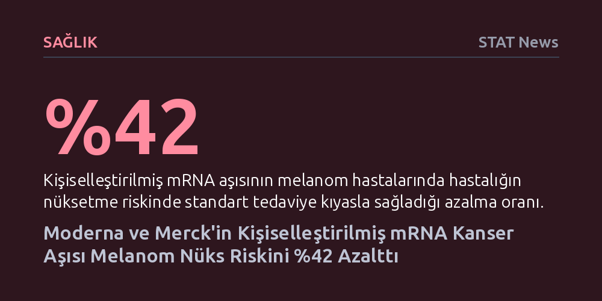

SAGLIK · STAT News · 2026-10-23
Moderna ve Merck'in geliştirdiği kişiselleştirilmiş mRNA aşısı intismeran, melanom hastalarında kanserin nüksetme riskini standart tedaviye kıyasla yüzde 42 azalttı. Klinik deney sonuçları, mRNA platformunun kanser nüksünü önlemede yeni bir tedavi çağı başlatabileceğini gösteriyor.
mRNA teknolojisinin yalnızca salgın hastalık aşılarıyla sınırlı olmadığını, kişiye özel tasarlanarak kanserin ölümcül nükslerini önlemede çığır açıcı bir tedaviye dönüşebileceğini kanıtlıyor.

Madrid'de düzenlenen onkoloji kongresinde paylaşılan geniş çaplı klinik deney sonuçları, kanser tedavisinde yeni bir eşiğin aşıldığını gösteriyor. Moderna ve Merck ortaklığıyla geliştirilen intismeran autogene adlı kişiselleştirilmiş mRNA aşısı, ileri evre melanom hastalarında standart tedaviyle karşılaştırıldığında hastalığın geri gelme riskini yüzde 42 oranında düşürdü.
Onkologlara göre bu oran, cilt kanserinin en ölümcül türü olan melanomla mücadelede kritik bir ilerlemeye işaret ediyor. Aşıyı alan hastalar, yalnızca standart tedavi uygulanan kontrol grubuna kıyasla belirgin şekilde daha uzun süre kanser nüksetmeden ve hastalıktan uzak bir yaşam sürmeyi başardı.
Geleneksel aşıların aksine intismeran autogene, tüm hastalara aynı formülle verilen standart bir ilaç değil. Tedavi süreci, doğrudan hastanın kendi tümör dokusundan alınan biyopsinin genetik dizilenmesiyle başlıyor ve her hastanın kanser hücresinde bulunan "neoantijen" adlı benzersiz mutasyonlar tespit edilerek kişiye özel üretiliyor.
Covid-19 aşılarıyla küresel ölçekte rüştünü ispatlayan mRNA teknolojisi, bu kez hastanın bağışıklık sistemine kendi tümörünün genetik parmak izini tanıtıyor. Böylece eğitilen bağışıklık hücreleri, cerrahi operasyon sonrasında vücutta kalmış olabilecek mikroskobik kanser hücrelerini hedef alıp yok edebilecek hassasiyete kavuşuyor.
Melanomdaki bu klinik başarı, mRNA platformunun yalnızca bulaşıcı hastalıkları engellemekle kalmayıp onkoloji alanında da geniş kapsamlı yeni bir tedavi dalgası başlatabileceğini kanıtlıyor. Uzmanlar, aynı biyolojik prensibin gelecekte diğer katı tümör türlerinde de nüksü önlemek amacıyla uyarlanabileceğini öngörüyor.
Bununla birlikte tıp dünyasında temkinli bir tartışma da sürüyor. Her hasta için sıfırdan aşı tasarlanıp üretilmesinin getirdiği yüksek maliyet ve zaman baskısının yanı sıra, bu bireyselleştirilmiş yaklaşımın mutasyon yükü daha düşük olan diğer kanser türlerinde ne kadar etkili olacağı henüz yanıt bekleyen en temel sorular arasında yer alıyor.